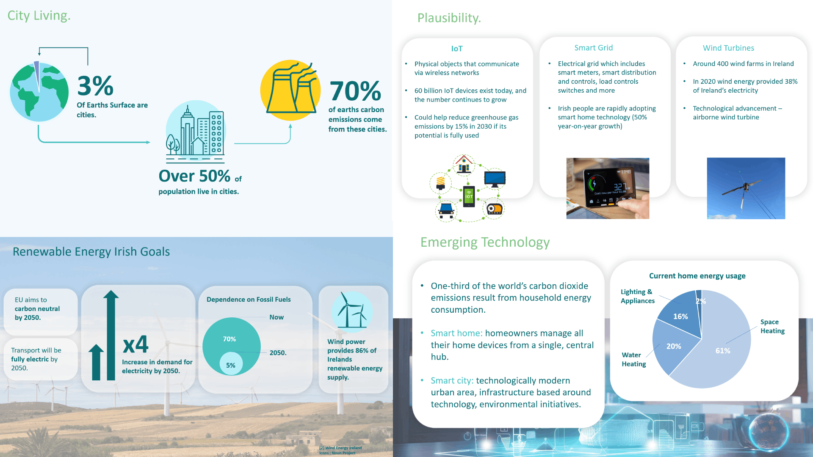
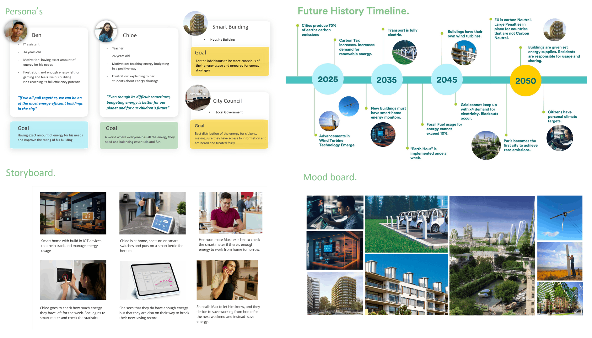

Speculative Design - Ireland 2050
In an era marked by rapid technological advancements and significant social transformations, envisioning our collective future has never been more important. This case study delves into creating a speculative design artefact to present and engage the audience with a positive vision of life in Ireland by the year 2050. Initial research on the subject revealed that self-sustaining smart cities will become a reality in the near future. The project incorporates emerging technologies such as smart energy grids and the Internet of Things (IoT), ensuring feasibility. It also identifies key signals and drivers of change, focusing on renewable energy and smart city development.

Brainstorming
A diverse approach was employed to explore future possibilities, including a "What If" exercise, stakeholder research, and a STEEP analysis. The "What If" exercise helped uncover a wide range of innovative ideas and potential directions for the project by posing provocative questions about emerging technologies and social trends and exploring the idea of a limited energy supply. Stakeholder research was conducted to speculate about varied individuals and organizations, including community leaders, energy suppliers and residents of smart homes and smart cities. This input was crucial for ensuring the envisioned future was plausible and aligned with the people's values and priorities. Finally, a STEEP analysis (examining social, technological, economic, environmental, and political factors) offered a structured approach to understanding future scenarios.

Define Phase
In the define phase, abstract ideas were translated into concepts and further developed. A Future History Timeline analysis helped identify key drivers of change and emerging trends that could shape life in Ireland by 2050. Following this, a range of personas was developed, including primary personas representing citizens in a smart city and non-human personas such as a smart building and city council. The mood board served as a valuable tool to capture the envisioned future's aesthetic and emotional tone. Finally, a scenario for a video was developed in order to bring the speculative vision to life. This scenario outlines a day in the life of the personas, showing how they interact with future technology and adapt to limited energy supplies.

Digital Product
The envisioned digital product is a smart interactive screen for use in smart homes or buildings. Residents can use it daily to control their smart home and monitor energy usage. The voice-activated screen recognizes users by their voice, welcomes them, and displays their home dashboard. This dashboard breaks down energy usage by day, week, and month, allowing users to turn smart devices on and off to conserve energy. Additionally, a second dashboard shows the building's energy usage, the latest news, energy breakdown, and a performance overview, enabling users to compare their building's energy use with nearby buildings.

Artefact
The created artefact highlights the daily lives of Irish citizens in a future where climate change has been tackled through sustainable and ethical practices. This approach involves world-building, a creative process that constructs a detailed and immersive future environment. Residents live in smart homes and buildings that are entirely reliant on renewable energy. Due to this, energy is limited, and residents must take measures and work together to conserve it.
Reflection
The essence of Speculative Design lies in its capacity to explore future possibilities and societal impacts arising from emerging technologies and evolving cultural trends. In constructing this vision of Ireland in 2050, the project integrates research into sustainable living and Ireland's sustainable goals, followed by brainstorming exercises, a defined phase, and finally, the development of a digital prototype and a video artefact. The artefact showcases the lives of future citizens as they work together to preserve energy in their homes. This case study aims to provoke discussion and debate about society's paths by presenting a hopeful glimpse into the future. By focusing on positive and equitable living experiences, this speculative vision encourages reflection on how today's decisions can shape a desirable future.